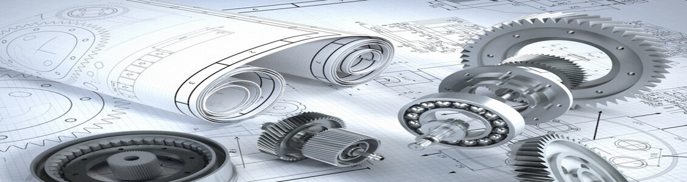

The department of Computer Engineering at PCCoE is committed for value added quality technical education in Computer Engineering. The strong pillars of our department for UG and PG program are the State of the Art Infrastructure, Competent Faculty and hardworking students. In addition to core academics, the students are provided with plenty of opportunities to develop and excel in curricular, co-curricular and extra-curricular areas such as research, skills development, higher studies, industrial training and placements. The program aims towards all round development of the students to make them competent individuals for industry, academia and research.

The Mechanical Engineering Department at Pimpri Chinchwad College of Engineering believes in producing engineers who take a product from an idea to the market place. The department has highly qualified and experienced faculty with expertise in the areas of Design, Production, Manufacturing and Thermal. The Department has a strong culture of project based learning which is inculcated in the students through the team of enlightened faculty. The department has defined the programme outcomes and all the good initiatives are undertaken to facilitate and fulfill the same.
Civil engineering is a professional engineering discipline that deals with the design, construction, and maintenance of the physical and naturally built environment, including works like roads, bridges, canals, dams, and buildings. Civil engineering discipline was introduced, at PCCOE in Academic Year 2012-13. The department includes well equipped laboratories of Strength of Material, Fluid Mechanics, Surveying, Transportation Engineering, Environmental Engineering and Geotechnical Engineering,. The department offers a four year course leading to the Bachelor’s Degree in Civil Engineering with a student intake of 60. Right from its inception, the department has been doing its best to bring about excellence in academics. The department is equipped with latest facilities and equipments for extensive training to the undergraduate students.
The Department of Electronics and Telecommunication Engineering has been playing a vital role in producing engineers and of highest skills and caliber. Department of E & TC has highly qualified and experienced faculty with expertise in the areas of Digital Image and Signal Processing, VLSI and Embedded System, Communication Engineering and Process Automation etc. The department has defined the programme outcomes and all the good initiatives are undertaken to facilitate and fulfill the same.